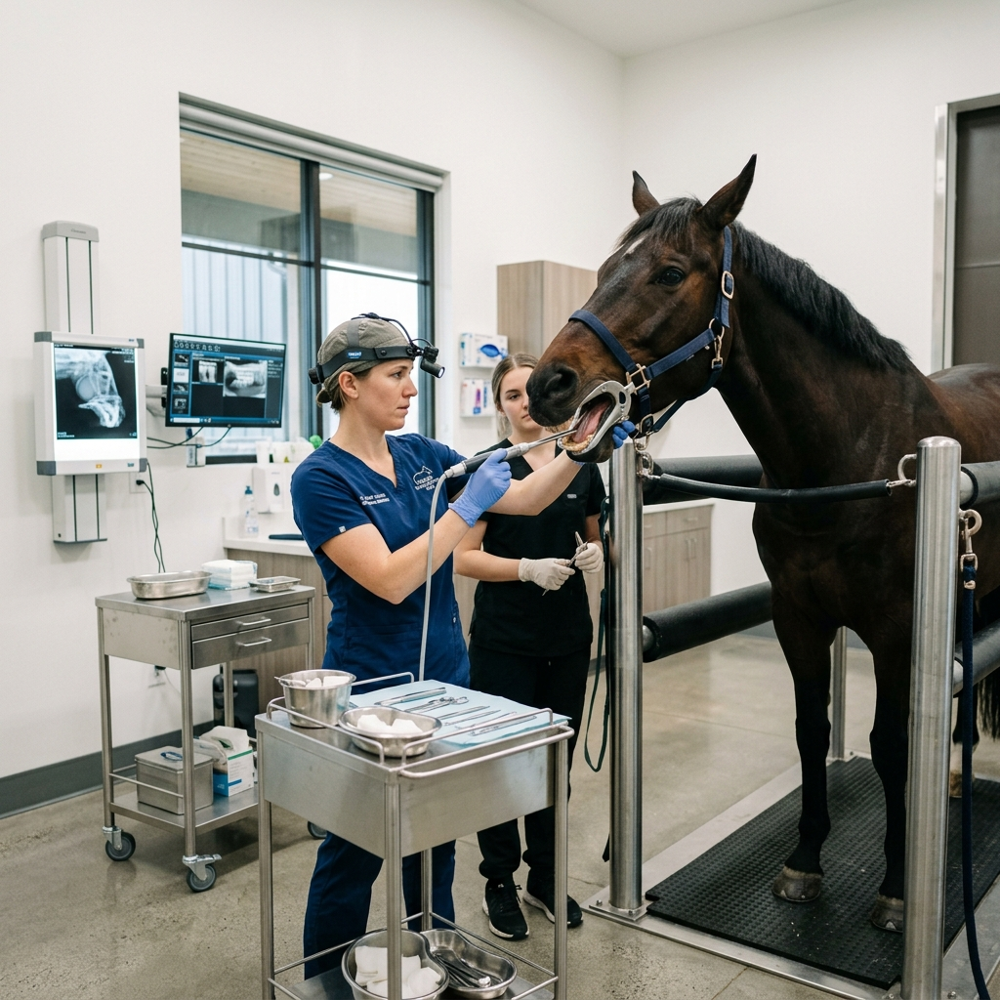

Comprehensive dental care is essential for your horse's overall health, digestion, and performance. We provide state-of-the-art floating, extractions, and diagnostic services.
Proper dental maintenance prevents a cascade of health issues.
Properly chewed forage prevents colic and ensures optimal nutrient absorption.
Eliminates bit resistance and head tossing caused by oral pain during riding.
Routine care preserves teeth into the senior years, maintaining overall vitality.
Early detection of periodontal disease and fractured teeth prevents systemic infections.

We administer safe, mild sedation to ensure the horse is relaxed and pain-free, using a full-mouth speculum for a complete view.
Using a bright headlight and dental mirror, we meticulously examine the teeth, gums, and soft tissues for abnormalities.
Using modern water-cooled power tools, we precisely reduce sharp enamel points and correct malocclusions without damaging the tooth structure.
We discuss our findings, show you any issues on our digital charts, and recommend an ongoing care schedule.
Common inquiries regarding equine dental care.
Most adult horses require an annual dental exam. Young horses (under 5) and senior horses (over 15) may need bi-annual checks due to rapid changes in their mouths.
Yes. Sedation is essential for a thorough, safe examination of the back molars and reduces stress for the horse during the floating process.
In most routine cases, you can resume normal riding the next day once the sedation has fully worn off.
Real results from our dental interventions.
Corrected a severe wave mouth in a 12-year-old gelding, restoring proper mastication and resolving weight loss issues over 6 months.
Surgical extraction of problematic blind wolf teeth in a 3-year-old filly, instantly resolving bit evasion during training.

Utilized digital radiography to diagnose an apical infection and safely extracted a fractured molar standing under sedation.
Careful palliative floating for a 28-year-old mare with expired teeth, focusing on preserving remaining dentition for comfort.
Don't wait for your horse to show signs of pain or weight loss. Proactive dental care is the key to a healthy horse.
Book Dental Exam